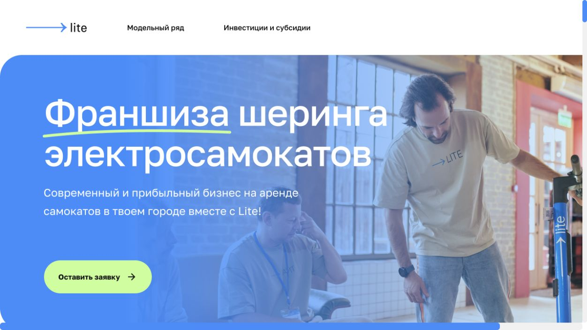
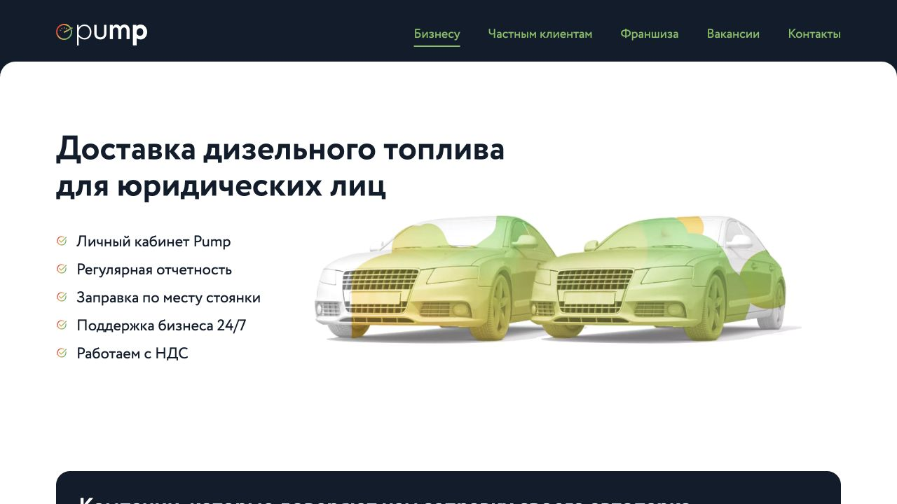
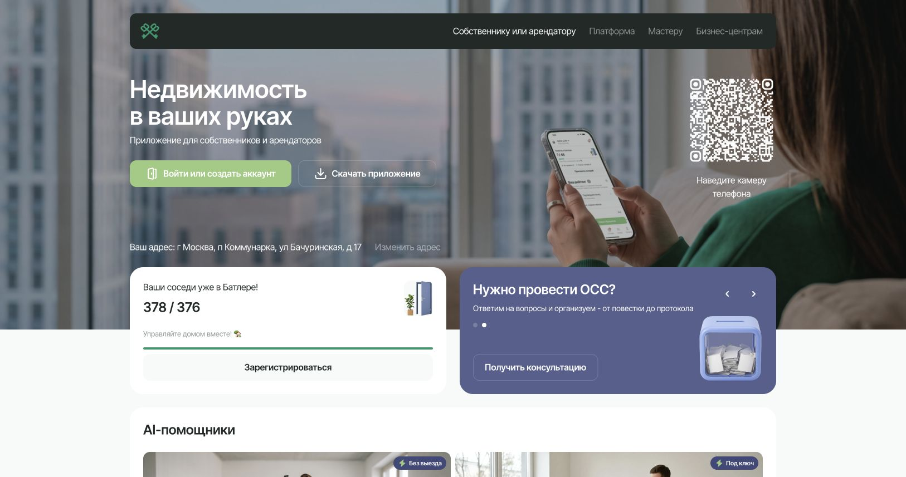

Единая база знаний
Регламенты, инструкции, скрипты и экспертиза — в одном месте, с понятной структурой.
Корпоративные знания и AI-автоматизация
Создаём корпоративные базы знаний на основе ИИ, которые ускоряют обучение команды, автоматизируют типовые задачи и помогают снижать операционные расходы.
От документов и экспертизы — к ответам и действиям
Собираем разрозненные материалы в систему, которой удобно пользоваться каждый день.
Регламенты, инструкции, скрипты и экспертиза — в одном месте, с понятной структурой.
Новичкам проще найти нужный порядок действий и освоить стандарты команды.
Ответы на вопросы по внутренним материалам компании, с опорой на источники.
Повторяющиеся вопросы и типовые задачи меньше отвлекают руководителей и специалистов.
Познакомьтесь с подходом
Откройте тестового консультанта по материалам продукта: задайте вопрос текстом или голосом и посмотрите, как устроен диалог.
Открыть тестовое демоЭто тестовый пример, а не готовое корпоративное внедрение. Ответы могут содержать ошибки; качество проверяем на пилоте.
Схема работы решения
Начинаем с конкретного процесса, в котором команда теряет время.
В каждой точке по-своему трактуют инструкции.
Общая база помогает следовать единым стандартам.
Менеджеры ищут условия и уточняют детали у коллег.
Материалы о продукте и скрипты доступны в одном месте.
Команда снова разбирает одни и те же обращения.
Ассистент помогает находить ответы на типовые вопросы.
Адаптация новичков постоянно отвлекает наставников.
Понятный маршрут обучения и ответы по внутренним правилам.
Нужный документ теряется среди папок и переписок.
Структурированный поиск упрощает доступ к экспертизе.
Предварительная оценка
Введите данные своей команды. Оценим объём времени, который потенциально можно освободить.
Оценка по вашим данным
Расчётная стоимость этого времени
Заполните поля слева. Долю освобождения времени задаёте вы — это допущение, а не прогноз AI PACK.
Это не чистая денежная экономия, не ROI и не гарантия результата. Расходы на внедрение и эксплуатацию не учтены. Фактический эффект оцениваем на пилоте.
Обсудить расчёт на аудитеПроверяем пользу на реальных задачах вашей команды.
Изучаем процессы и документы. Выбираем задачи и показатели для пилота.
Собираем базу знаний, устраняем пробелы вместе с вашей командой.
Подбираем AI-инструменты и проверяем ответы на рабочих сценариях.
Обучаем команду. Сравниваем результат с согласованными показателями.
Состав работ и стоимость определяем после диагностики.
Если нужно понять, где автоматизация принесёт пользу.
Если знания есть, но ими сложно пользоваться.
Если требуется связать знания с рабочими процессами.
Сервисы наших партнёров. Представлены для знакомства с их бизнесом; это не кейсы внедрения AI PACK.

Франшиза шеринга электросамокатов: условия сотрудничества, калькулятор доходности и заявки.

Доставка топлива корпоративным клиентам: описание услуг, заявка и личный кабинет.

Платформа для жителей, управляющих организаций и мастеров с отдельными сценариями взаимодействия.
До передачи материалов согласуем состав данных, права доступа, размещение и используемые сервисы. Требования к конфиденциальности и обработке данных фиксируем в условиях проекта. Для первого обсуждения не нужны закрытые документы.
AI может ошибаться. На пилоте проверяем ответы на ваших сценариях, качество источников и случаи, в которых нужен специалист. Критичные решения остаются под контролем человека.
Это зависит от объёма и качества материалов, интеграций и требований к доступу. После диагностики предлагаем состав работ, сроки и стоимость. Отдельно обсуждаем расходы на эксплуатацию.
Согласуем, кто обновляет базу знаний, как проверяются ответы и куда сообщать об ошибках. Объём поддержки, время реакции и условия сопровождения определяем в договоре.
До пилота фиксируем исходные показатели: время поиска ответа, число повторяющихся вопросов, часы ручной работы или скорость адаптации. После пилота сравниваем результаты по выбранным показателям.
Начнём с короткого аудита
Разберём ваши процессы, определим точки экономии и предложим план внедрения AI-базы знаний.